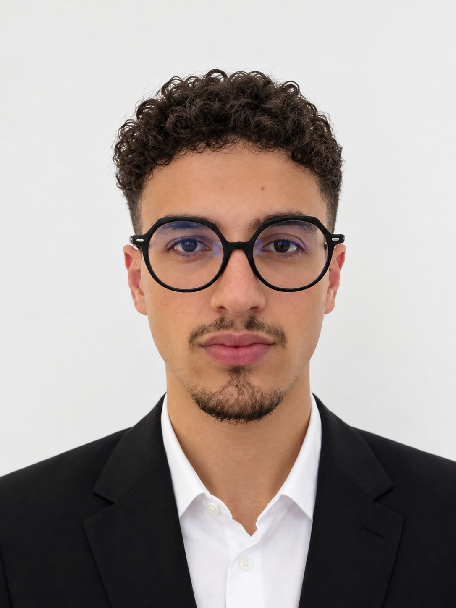

Actuellement en cycle ingénieur après des classes préparatoires MP*, je recherche un stage de 3 mois en développement logiciel, algorithmie et mathématiques appliquées.
Télécharger CV (FR) Download CV (EN)Aperçu de mes réalisations techniques :
Action : Optimiser l'amortissement du mode phugoïde des aéronefs via un modèle numérique validé sur maquettes, identifiant les paramètres aérodynamiques clés.
Action : Sécuriser un jeu en développement en implémentant une validation stricte des entrées, garantissant une exécution robuste et sans plantage.
Action : Développer un algorithme vectorisé d'estimation pour des données spatiales bruitées, optimisant le temps de calcul par l'élimination des boucles.
Action : Prouver la validité d'algorithmes complexes via des tactiques formelles, validant la conception de systèmes logiciels sans bugs.
Depuis plus de 3 ans, j'assure l'encadrement et l'orientation académique de plus de 2000 étudiants en classes préparatoires scientifiques (SUP et SPÉ). En tant que manager, je structure leurs méthodes de travail et les accompagne au quotidien dans la gestion de leurs révisions. Cet engagement à grande échelle m'a permis de forger de solides compétences en leadership, en pédagogie et en gestion d'équipe.
Le sport m'apporte la rigueur, l'esprit d'équipe et la régularité indispensables au métier d'ingénieur :
[En cours]
[En cours]